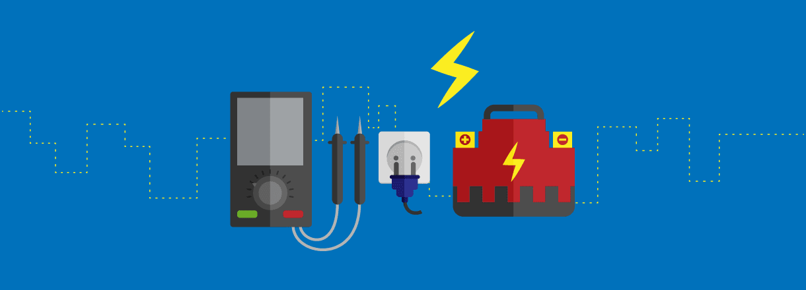

什麼是微轉型,就是在現實生活中,不用大幅的改變,而是利用目前有的優勢,再稍微整理,將自己的能力發揮到極至,看能不能擺脫目前的困境.
我現在正缺的就是這種能力,我有程式設計的能力,但在公司並不是那麼受重用,所以感覺自己並不是那麼有自信.
所以我現在缺的就是這種微轉型的能力,看能不能有多一些的機會,讓我重新變的更加有自信.
而我,剛才講說光有程式設計能力,但除了工作外,好像都不能使用,可是以這種技術能力,照理說只要會包裝,應也是很受歡迎的才對啊?.
如何包裝,要打對市場
首先當然要知道自己的市場在那裡?其實現在我剛起步,也談不上什麼市場,應是說找一個能發揮我所長的地方就好.
那到那裡找需要程式設計,且可以教學相長的地方,就是我首要的地方,這種地方到那找?
現在終於了解到藝人為什麼要有經紀人,因為經紀人知道那裡可能找到符合他的地方,不用好像大海撈針一樣,無法找到一個符合需要自己的地方.
而我現在最缺的就是這種經紀人,像我們這種人物,也請不起什麼經紀人,我想還是靠自己比較實在,多點用心,相信一定能找到的,問題是一定要踏出第一步~
